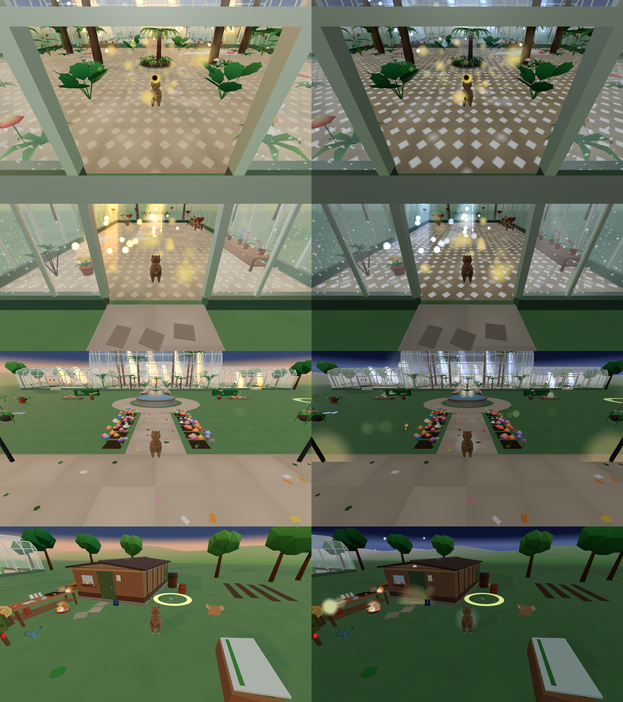

Left: pass 8 at night (?dusk=1&hour=23&nonight=1). Right: pass 9 (?dusk=1&hour=23). Rows: hall, orchid house, court, shed. Page: tools/verify/verify-greenhouse.html shots n9_hall, n9_orchid, n9_court, n9_shed (also n9_owl, n9_moth, n9_hog for the visitors; the page canvas is 960x540). New: a deeper night grade (dark blue sky, cool moonlight), stars and a moon, silver moonbeams and moonlit floor squares, bluer glass and mist, glowing night-bloom halos, lantern pools, fireflies and moths drifting in clouds with trails, a moon rim behind the cat, the sleepy cat's breathing glow, a hedgehog on the court bed, a moth on the glass, an owl on a roof rib that hoots. Honest: at the play camera the sky is only a thin strip, so the stars and moon read best through the roof; the owl and the moth on the glass are small; the hall's foreground frame stays pale; the biggest change is the grade, the silver beams and floor squares, and the garden's dark blue.
